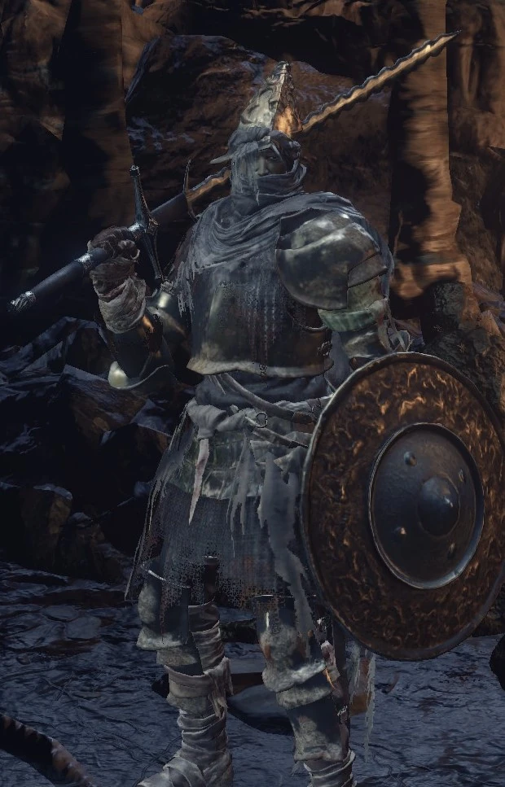

← Volver
← Volver
El Caballero Santo Hodrick es no solo un NPC de Dark Souls III, sino que es un NPC invasor.
| Caballero Santo Hodrick lista de objetos disponibles | Cantidad | Probabilidades | Suerte |
|---|---|---|---|
| Hueso del Retorno | 1 | 10% | No |
Diálogo del primer encuentro
"Bueno, ¿qué ha pasado aquí? Este pozo es para huecos, no para gente cuerda como ustedes. ¿O quizás eres un hueco, haciéndote pasar por otra cosa?"
Al seleccionar la opción "De hecho"
"Sí, sí. Entonces estamos bien. Es importante saber quién eres. Pero pronto todos nos volveremos locos. Y si eres un No Muerto, bueno, con mayor razón. "
Al seleccionar la opción "no"
"No, no, claro que no. Eso es lo que siempre dicen los locos. Pero pronto todos nos volveremos locos. Y si eres un no-muerto, bueno, con más razón."
Al seleccionar "hablar"
"Cuidado, los grilletes de los Dioses son frágiles. Podrías necesitar esto. Grábalo en tu corazón si sientes que tu cordura flaquea. (Recibe a los Creadores de Montículos)"
"Ven aquí a amontonar a tus víctimas, pues eso formará tu ancla. Ya lo verás cuando enloquezcas. Serán tu familia. (Ríe)""
Seleccionar "hablar" nuevamente
"Algún día te volverás loco, pero no hoy. Sigue mi consejo. Usa este hueso y vete de aquí. (Recibe un hueso de regreso a casa)"
"Este pozo es para los Huecos y para el loco ocasional aficionado a acumular víctimas. Espero que tengas mejores cosas que hacer, ¿no? (Ríe)"
Al atacarlo
"¡Lo sabía! ¡Sabía que estabas vacío! —Lo sabía, ¡sabía que eras Hueco! Bueno, está bien."
Al ser asesinado por él
""Bueno, otro miembro más en la familia. Bien, a la pila contigo. Ya eres familia..."
Al asesinarlo
"Ahhh, mi familia... Querida y pequeña Sirris..."

 ↑
↑